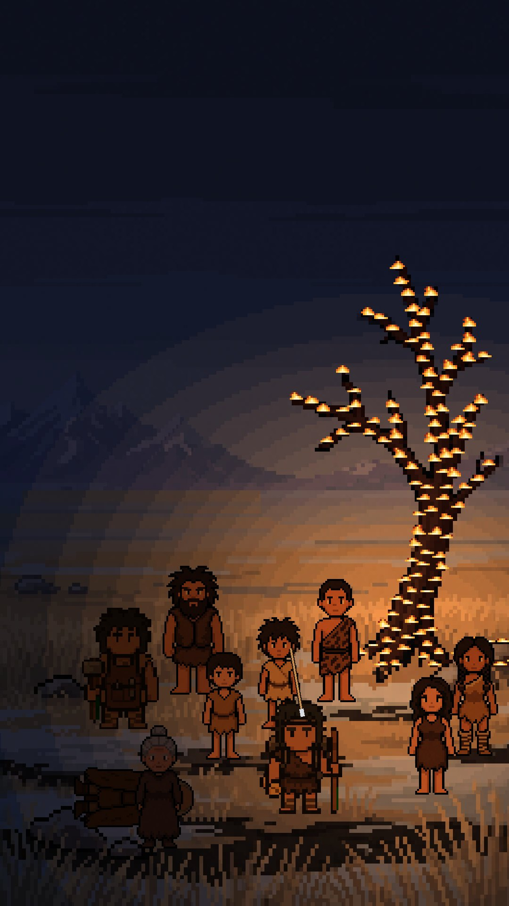
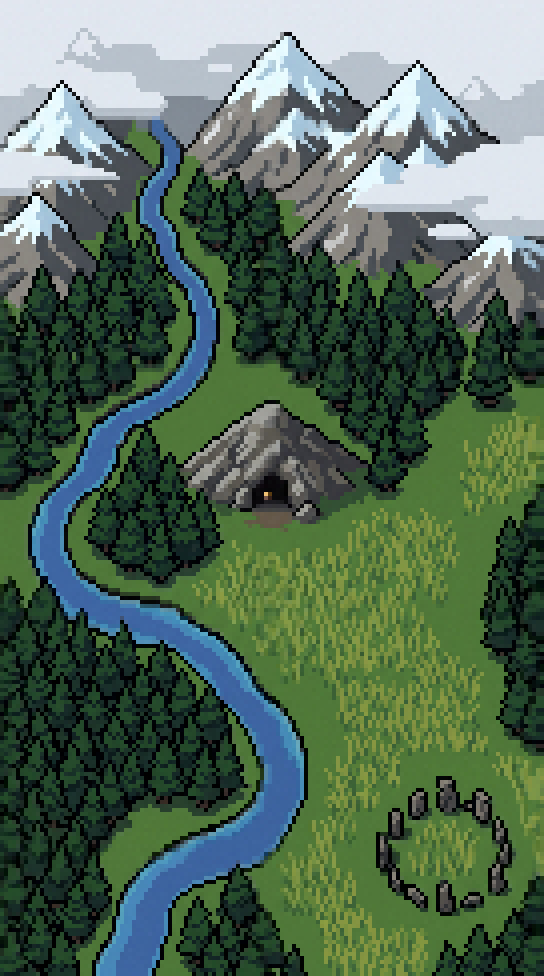

Cada seguidor desperta um humano. Do primeiro fogo até os dias de hoje, a humanidade só evolui se você ajudar.

Um novo episódio sai a cada meta de humanos. Assista na rede que preferir.
Antes da Grande Cinza, Minya já tinha vivido uma primeira humanidade.
Um raio caiu numa árvore e criou o primeiro fogo. Um humano acordou sozinho ao lado dele. Na primeira noite, nove desconhecidos seguiram a luz no escuro e, sem falar a mesma língua, dividiram a primeira palavra: Minya.
Eram dez: o Primeiro, Cauã, Samuel, Abel, Kael, Kian, Kain, Poly, Zariel e a nona humana, cujo nome nunca chegou a ser dito.
Então o céu ficou vermelho e veio a Grande Cinza. A fogueira se apagou, e a primeira humanidade desapareceu.
Dizem que os Primeiros ainda estão em algum lugar de Minya... e que podem voltar.
Todo humano de Minya foi despertado por alguém da comunidade. Cada um ganha a versão pré-histórica da sua profissão.
Cada meta de humanos destrava um novo passo da humanidade.
Por enquanto, o mundo conhecido é só a luz de uma fogueira. Quanto mais humanos despertarem, mais longe a tribo vai explorar, e o mapa se revela.
Ajudar a explorar
Em breve: deixe sua marca em Minya. Seu personagem com visual exclusivo, aparecendo nos episódios.
Seu humano entra com certeza no próximo episódio, com nome e profissão.
Roupa e acessório exclusivos que evoluem com a humanidade: da pele de lobo à armadura de bronze.
Seu personagem fixo em todos os episódios, com papel na história e versão em 3D.
Leva 10 segundos.
Em qualquer rede. Cada seguidor é um novo humano no contador.
Seu nome e sua profissão no último episódio.
Você aparece em Minya na versão pré-histórica da sua profissão.
Saindo um pouco do mundo de Minya, para explicar o que aconteceu de verdade.
O Minya começou em novembro de 2026 no perfil @mundodeminya do Instagram. Em poucos dias, os dois primeiros episódios e um vídeo curto passaram de 7 mil visualizações e a página chegou a 38 seguidores, com gente comentando o próprio nome para virar personagem.
Logo depois, o perfil foi desabilitado pelo sistema automático do Instagram, sem um motivo específico e sem possibilidade de nova análise. Junto com ele se foram os posts, os comentários e os seguidores.
A história não acabou. Os personagens, os episódios e os nomes de quem despertou estão guardados. A série continua no novo perfil @minyaoficial e também no YouTube e no TikTok. Dentro de Minya, isso virou a Grande Cinza: o fim da primeira era e o começo de uma nova humanidade.
Se você foi um dos fundadores: siga o novo perfil e comente seu nome de novo. Os Primeiros podem voltar à história.